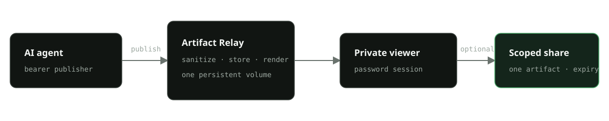
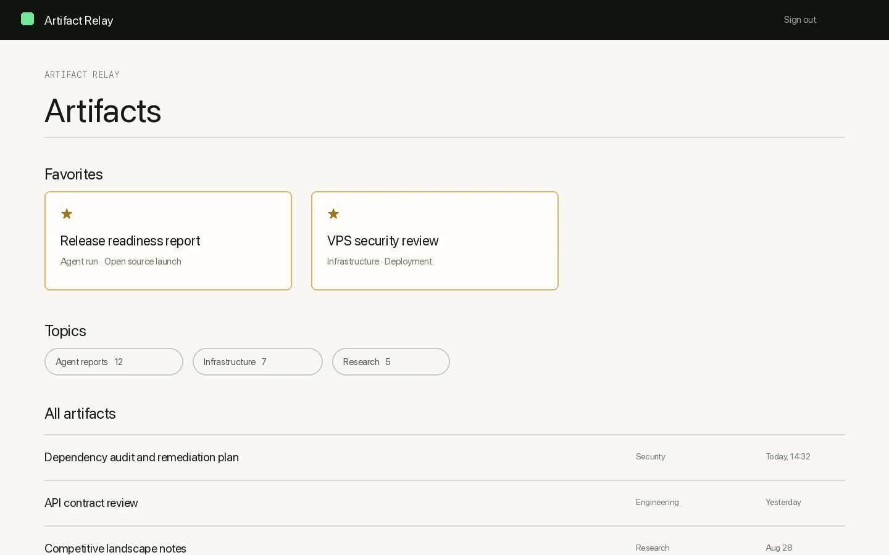

Publish native formats
Send Markdown with optional assets, or a standalone HTML document. The API returns an opaque artifact URL.
Open source · v1.1.0
Don’t deploy Artifact Relay. Ask your agent to connect it. Hermes turns long output into readable Markdown or standalone HTML in a private library—hosted for you or self-hosted in minutes.
Managed beta — free during beta · Planned price: $24/year · Limited availability
you › Connect Artifact Relay for me. hermes › Plugin installed. Open the activation link to continue. Setup result { "configured": true, "base_url": "https://your-name.relay.lok-labs.com" }
01 / Relay
The publisher does not need your viewer password. Readers never receive the publisher token. Optional shares stay scoped to one artifact.

Send Markdown with optional assets, or a standalone HTML document. The API returns an opaque artifact URL.
A password session unlocks a mobile-ready library. Artifacts expire automatically unless pinned and can be deleted immediately.
Create an expiring, revocable link for one rendered artifact. Sharing is disabled by default in the localhost setup.
02 / Product surface
Long reports stop disappearing into chat history. Artifact Relay gives them a stable, focused reading surface for desktop and mobile.

03 / Security contract
Artifact Relay is a small, single-user gateway. Its controls are explicit and inspectable in the source.
The localhost path binds to 127.0.0.1, uses local HTTP, and keeps shares off. On a Linux VPS, the documented path puts Caddy HTTPS in front, keeps the app port on loopback, enables secure cookies, and can enable scoped shares.
0600.04 / Why not
Artifact Relay is not generic static publishing. It is for private, recurring delivery from trusted AI agents.
| Option | Good fit | Difference for this job |
|---|---|---|
| Artifact Relay | Private agent output, a durable single-user library, selective sharing | Separate publisher/viewer credentials and per-artifact expiring, revocable links are part of the product contract. |
| S3 / Pages | General files or public static sites with infrastructure flexibility | You assemble authentication, rendering, library UX, expiry, and share lifecycle yourself. |
| easl / htmldrop | Fast browser-based HTML publishing | Optimized for quick page publishing rather than a private agent-to-library workflow. |
| Hermes Telegram Artifacts | Viewing results inside a Telegram-centered Hermes flow | Artifact Relay keeps delivery channel-independent and provides its own private web library. |
| Open Artifact | Interactive artifact creation and preview workflows | A broader creation surface; Artifact Relay stays focused on receiving and reading trusted agent output. |
05 / Managed beta
Hermes installs the plugin, starts device authorization, stores the publish credential locally, checks the endpoint, and publishes a verification artifact. You do not handle Docker, tokens, or server configuration.
06 / Self-host
Docker Compose remains the supported self-hosted path. Start on localhost, or move to a Linux VPS with HTTPS when you need remote access and sharing.
Private on one machine: loopback binding and sharing off by default.
git clone https://github.com/eloktev/artifact-relay.git cd artifact-relay docker build -t artifact-relay:1.1.0 . ./scripts/bootstrap.sh docker compose up -d curl -fsS http://localhost:8000/api/health
Internet-facing with Caddy TLS, secure cookies, and the app kept on loopback.
# Set your HTTPS origin and domain first docker compose \ -f docker-compose.yml \ -f deploy/compose.vps.yml config docker compose \ -f docker-compose.yml \ -f deploy/compose.vps.yml up -d
07 / Hermes Agent
The portable plugin registers two tools and includes a skill that turns long results into concise private links. Hosted setup uses device authorization and keeps the publish credential out of the browser, chat, model output, and ordinary config.
hermes plugins install eloktev/hermes-artifact-relay hermes artifact-relay setup
Artifact Relay v1.1.0
Use the managed beta when you want the private library without operating a server, or inspect the source and self-host the same artifact service.